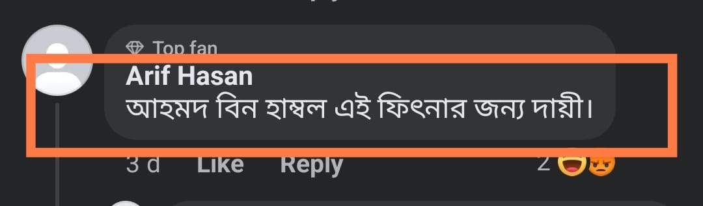

বড়ভাইয়ের সঙ্গে সম্পূর্ণ সহমত পোষণ করছি
৩ এপ্রিল, ২০২৪
বড়ভাইয়ের সঙ্গে সম্পূর্ণ সহমত পোষণ করছি।
‘ইমাম আহমদ বিন হাম্বল এই (দেহবাদি) ফিৎনার জন্য দায়ী’ তবে দায়ী তিনি একা নন; তারও পূর্বে দায়ী হল ইমাম আবু হানিফা, মালেক, শাফিই, ইবনুল মুবারাক, সুফিয়ান, নুয়াইম বিন হাম্মাদ-সহ অনেকেই। (রাহিমাহুমুল্লাহ)
তবে সবচে' বড় দায়ী ইমাম আহমদ। কিন্তু পাব্লিকের ভয়ে কালামি বন্ধুগণ এ কথাটি বলতে পারে না আর কি।
বড়ভাইয়ের সাহসের প্রশংসা করতেই হয়!
বড়ভাইয়ের সঙ্গে সম্পূর্ণ সহমত পোষণ করছি।
‘ইমাম আহমদ বিন হাম্বল এই (দেহবাদি) ফিৎনার জন্য দায়ী’ তবে দায়ী তিনি একা নন; তারও পূর্বে দায়ী হল ইমাম আবু হানিফা, মালেক, শাফিই, ইবনুল মুবারাক, সুফিয়ান, নুয়াইম বিন হাম্মাদ-সহ অনেকেই। (রাহিমাহুমুল্লাহ)
তবে সবচে' বড় দায়ী ইমাম আহমদ। কিন্তু পাব্লিকের ভয়ে কালামি বন্ধুগণ এ কথাটি বলতে পারে না আর কি।
বড়ভাইয়ের সাহসের প্রশংসা করতেই হয়!
